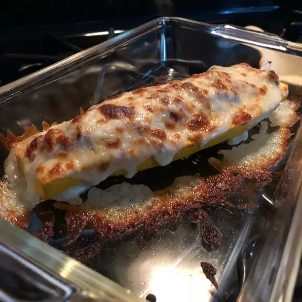

Easy Stuffed Zucchini

Description
Fresh out of the oven...zucchini packed full of meat, sauce and cheese makes a delicious dish!
Fresh out of the oven...zucchini packed full of meat, sauce and cheese makes a delicious dish!.
Fresh out of the oven...zucchini packed full of meat, sauce and cheese makes a delicious dish!.
Fresh out of the oven...zucchini packed full of meat, sauce and cheese makes a delicious dish!.
Fresh out of the oven...zucchini packed full of meat, sauce and cheese makes a delicious dish!
Ingredients
- ½ pound ground beef
- 1 large zucchini, ends trimmed
- ½ cup bread crumbs
- 2 cloves garlic, minced
- 1 (16 ounce) jar spaghetti sauce
- ½ (6 ounce) can sliced black olives, drained
- ½ cup grated Parmesan cheese
- 1 cup shredded mozzarella cheese
Steps
- Preheat oven to 350 degrees F (175 degrees C).
- Cook and stir the ground beef in a skillet over medium heat until the meat is browned,
breaking the beef up into crumbles as it cooks, about 10 minutes. Drain off excess fat,
and transfer the beef into a mixing bowl. Slice the zucchini in half the long way, and
use a spoon to scoop out the flesh, leaving a 1/2-inch thick shell all around the zucchini.
Chop the scooped-out zucchini flesh, and add to mixing bowl. Stir in the bread crumbs,
garlic, spaghetti sauce, black olives, and Parmesan cheese; mix the stuffing well.
Lightly stuff both halves of the zucchini with the meat mixture. Place the zucchini
halves into a baking dish, and cover tightly with foil.
- Bake in the preheated oven for 45 minutes, remove from oven, and remove the foil.
Sprinkle 1/2 cup of shredded mozzarella cheese over each zucchini half. Move an oven rack
to within 6 inches of the oven broiler's heat source, turn on the broiler, and broil
the zucchini until the mozzarella cheese is browned and bubbling, about 5 minutes.